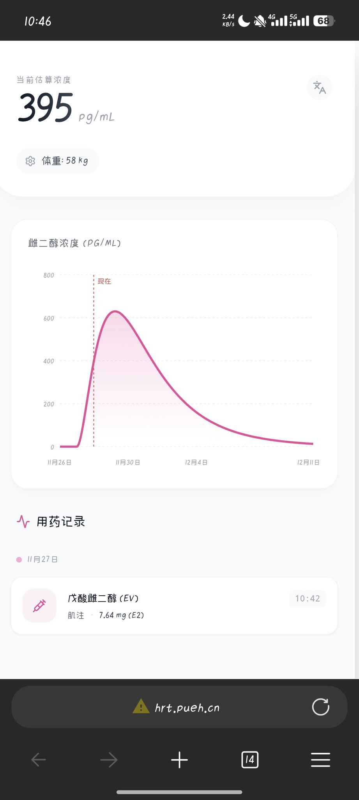

开盒！
Domain Name: https://t.co/99iaLJ6Os3 ROID: 20240102s10001s55807763-cn Domain Status: ok Registrant: 胡贵嘉 Registrant Contact Email: 3244004929@qq.com Sponsoring Registrar: 阿里云计算有限公司（万网） Name Server: https://t.co/nTmKF7vhPj Name Server: https://t.co/uBOJFTMEMV Registration Time: 2024-01-02 04:04:30 Expiration Time: 2026-01-02 04:04:30 DNSSEC: unsigned
（注册域名要注意隐私保护哦，不要在外网发.cn域名）
另外有https建议做个强制https
Domain Name: https://t.co/99iaLJ6Os3 ROID: 20240102s10001s55807763-cn Domain Status: ok Registrant: 胡贵嘉 Registrant Contact Email: 3244004929@qq.com Sponsoring Registrar: 阿里云计算有限公司（万网） Name Server: https://t.co/nTmKF7vhPj Name Server: https://t.co/uBOJFTMEMV Registration Time: 2024-01-02 04:04:30 Expiration Time: 2026-01-02 04:04:30 DNSSEC: unsigned
（注册域名要注意隐私保护哦，不要在外网发.cn域名）
另外有https建议做个强制https
